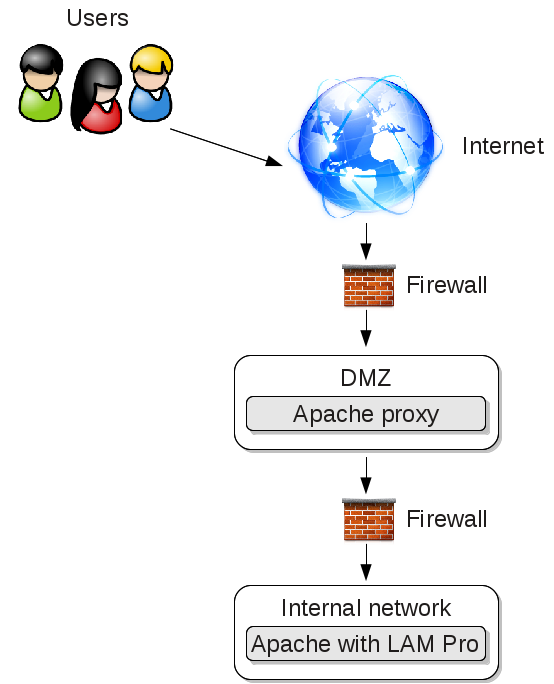

LAM includes several .htaccess files to protect your configuration files and temporary data. Apache is often configured to not use .htaccess files by default. Therefore, please check your Apache configuration and change the override setting to:
AllowOverride All
If you are experienced in configuring Apache then you can also copy the security settings from the .htaccess files to your main Apache configuration.
If possible, you should not rely on .htaccess files but also move the config and sess directory to a place outside of your WWW root. You can put a symbolic link in the LAM directory so that LAM finds the configuration/session files.
Security sensitive directories:
config: Contains your LAM configuration and account profiles
LAM configuration passwords (SSHA hashed)
default values for new accounts
directory must be accessibly by Apache but needs not to be accessible by the browser
sess: PHP session files
LAM admin password in clear text or OpenSSL encrypted
cached LDAP entries in clear text or OpenSSL encrypted
directory must be accessibly by Apache but needs not to be accessible by the browser
tmp: temporary files
PDF documents which may also include passwords
images of your users
directory contents must be accessible by browser but directory itself needs not to be browseable
With HTTP authentication Apache will be responsible to ask for the user name and password. Both will then be forwarded to LAM which will use it to access LDAP. This approach gives you more flexibility to restrict the number of users that may access LAM (e.g. by requiring group memberships).
First of all you need to load additional Apache modules. These are "mod_ldap" and "mod_authnz_ldap".
Next you can add a file called "lam_auth_ldap" to /etc/apache/conf.d. This simple example restricts access to all URLs beginning with "lam" to LDAP authentication.
<location /lam> AuthType Basic AuthBasicProvider ldap AuthName "LAM" AuthLDAPURL "ldap://localhost:389/ou=People,dc=company,dc=com?uid" Require valid-user </location>
You can also require that your users belong to a certain Unix group in LDAP:
<location /lam> AuthType Basic AuthBasicProvider ldap AuthName "LAM" AuthLDAPURL "ldap://localhost:389/ou=People,dc=company,dc=com?uid" Require valid-user # force membership of lam-admins AuthLDAPGroupAttribute memberUid AuthLDAPGroupAttributeIsDN off Require ldap-group cn=lam-admins,ou=group,dc=company,dc=com </location>
Please see the Apache documentation for more details.
In some cases you might want to make the self service accessible via the internet. Here is an Apache config to forward only the required URLs via a proxy server (lamproxy.company.com) in your DMZ to the internal LAM server (lam.company.com).

This configuration allows your users to open https://lamproxy.company.com which will then proxy the self service on the internal server.
<VirtualHost lamproxy.company.com:443>
ServerName lamproxy.company.com
ErrorLog /var/log/apache2/lam-proxy-error.log
CustomLog /var/log/apache2/lam-proxy-access.log combined
DocumentRoot /var/www/lam-proxy
<Proxy *>
Order deny,allow
Allow from all
</Proxy>
SSLProxyEngine on
SSLEngine on
SSLCertificateFile /etc/apache2/ssl/apache.pem
ProxyPreserveHost On
ProxyRequests off
loglevel info
# redirect front page to self service login page
RewriteEngine on
RedirectMatch ^/$ /templates/selfService/selfServiceLogin.php?scope=user\&name=lam
# proxy required URLs
ProxyPass /tmp https://lam.company.com/lam/tmp
ProxyPass /sess https://lam.company.com/lam/sess
ProxyPass /templates/lib https://lam.company.com/lam/templates/lib
ProxyPass /templates/selfService https://lam.company.com/lam/templates/selfService
ProxyPass /style https://lam.company.com/lam/style
ProxyPass /graphics https://lam.company.com/lam/graphics
ProxyPassReverse /tmp https://lam.company.com/lam/tmp
ProxyPassReverse /sess https://lam.company.com/lam/sess
ProxyPassReverse /templates/lib https://lam.company.com/lam/templates/lib
ProxyPassReverse /templates/selfService https://lam.company.com/lam/templates/selfService
ProxyPassReverse /style https://lam.company.com/lam/style
ProxyPassReverse /graphics https://lam.company.com/lam/graphics
</VirtualHost>